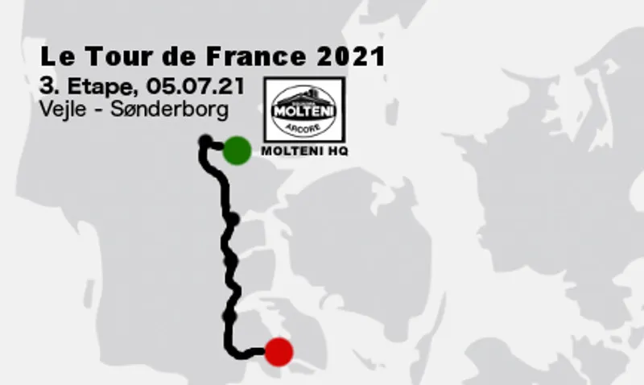

Tour de France til Molteni HQ

P R E S S E M E D D E L E L S E
Efter mange og lange forhandlinger med SOCIETE DU TOUR DE FRANCE, ASO og ikke mindst Mr. Christian Prudhomme, er det med stor glæde, at Squadra Molteni kan præsentere, at 3. etape i Tour de France 2021 starter ved HQ Squadra Molteni.
– Vi har haft mange gode samtaler med Christian Prudhomme, som er stor fan af Squadra Molteni – og vintage/retrocykling. Han har aldrig været i tvivl om, at hvis Tour de France skulle starte i Danmark – så skulle Vejle, hvor Squadra Molteni har HQ, med på rutekortet, fortæller Kaptajn Bjørnsteen.


TV-udbrud
At Danmark har fået Grand Depart i 2021 er stort. At Vejle og Squadra Moltenis HQ er startby for 3. etape er endnu større. Men det bliver endnu vildere.
– Vi er allerede gået i gang med at planlægge et spetakulært TV-udbrud, afslører Squadra Moltenis tekniske- og logistiske ansvarlige Granne Maaløe og Klaus Maarup Kjærsgaard. Vi kan endnu ikke gå i detaljer – dem holder vi tæt ind til kroppen. Men vi kan godt fortælle, at vi kort efter tourfeltet har forladt Vejle og TV-helikopterne er i luften, vil sætte et stort TV-udbrud ind. Og det vil tælle hele Squadra Molteni holdet – inkl. Volvo servicebil og Citroën HY holdbus, fortæller Klaus Maarup Kjærsgaard.